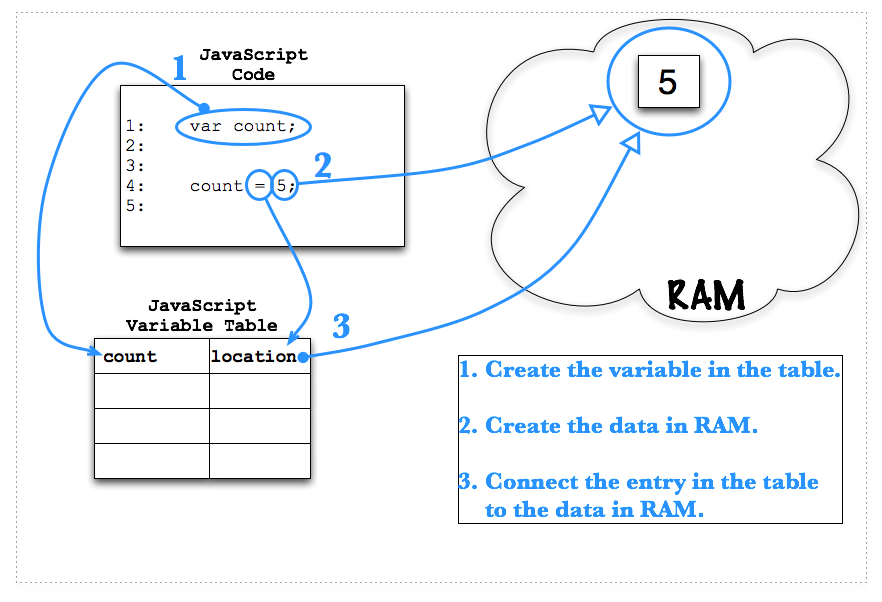

Learning Unit 1
Learning Unit 1Variables in JavaScript
Computer programs mostly deal with data, electronic data. Is this section we're going to look at what data are and how we store and manipulate data.
Computers
Computer programs do three basic things from our perspective.
- They get data into the program
- They process the data
- They output the data
So What's Data?
Let's first look inside the computer at RAM. RAM stands for Random Access Memory. This means that the computer can go get something in RAM from anywhere very quickly. RAM is where the computer stores its data, including the operating system and the programs themselves. How do we imagine RAM? Here's one favorite way:
RAM is one long linear chain of bits. And a bit is a very simple thing, it's just a 0 or a 1. Think of each mark on the tape measure as a single bit. Data is just a collection of bits in a known spot. Say, starting at 5" on the tape measure and going for 10 marks.
What's a Variable?
- Computer programs have to have a way to find and use the data that they need. Data within a program is stored in variables. Physically, a Variable is a spot in RAM that has been given a name. But from a software perspective, you can think of variables as containers. But, this container doesn't hold water, it holds data. Or, more technically correct in JavaScript, it holds references to data.
- Here's how we do that in JavaScript:
- We start with the word
var. This tells JavaScript that it is to create a variable. The variable is named using whatever set of characters follows, in the above case count. The wordvaris required by JavaScript in order to correctly make a variable. - Then we have the name of the variable, in this case
count. [Note that this is a syntactically correct variable name. However, normally for business programming, with its emphasis on program maintainability, we will be using variables with names made up of at least two words. E.g. "loopCount" or "recordCount" or "errorCount" or "attemptCount" are all variable names that have a modifying word before the main word in the variable name. ] - And, finally, we have a semicolon (
;), which is required by course standards. - However, at this point the variable doesn't have any value in it. Here's the variable declaration over again with a small addition.
- We've added the
" = 1"(a space, an assignment operator, and the number 1). - This line creates the variable and puts the value 1 into it. (Or more technically correct, it puts a reference to the number one into it.)
- Creating a variable demo: JavaScript Variables Table
- Here's the final frame from the animated demo:

Getting Some Input (i.e. getting some data into a program)
We need input!
- We're going to start with a simple way to get input from our users, the
promptdialog box. Prompt is a method of the window object--see the "Getting Started..." booklet for more details. - Here's what it looks like:
- Here's what happens
- When JavaScript sees this
prompt("...")it will open a dialog box. - The text inside the quotes will be displayed in the dialog box for the user to read.
- When the user enters something in the text box and presses the OK button, the data he/she entered is put into the variable to the left of the
prompt. - We can then use the variable with its new content.
- When JavaScript sees this
- Here's a demo of the prompt: Demo:
prompt().
Displaying output (i.e. getting some data out of the program on to the Web page)
We want to start doing some labs. But, we need to be able to see what is going on in our programs.
- Here's a piece of JavaScript that you've seen already. We'll explain it in more detail now.
- The word
documentrefers to the HTML page that contains this JavaScript program. - The period (
.), called the dot, is a way to access things inside of your document. - The word
writeis, in object oriented talk, a method of the document object, although some authors refer to it as thewrite"function," which is also fine. See the "Getting Started . . ." booklet for more details. Don't worry if this doesn't make complete sense yet, it will in time. - Next is a set of parentheses with some quoted words inside.
- And, finally, a semicolon!
- What happens when this is run by JavaScript?
- When this method is run it takes whatever is in the parentheses and outputs it to the HTML page right where the "write" happens to be. In our labs that will be just after the <script> tag ends.
- What can I put in a "write"?
- Everything that we are creating in our programs can go in a write--it's handy.
- Here's a demo of this: Demo:
document.write() - Now let's go do the lab: Lab 5: First Variables
- Here are the exercises for the lab. Lab 5: Exercises
Data Types
How a computer keeps its data straight
- All data in a computer physically are just binary digits, represented by zeros and ones. However, your programs will need to think of different pieces of data as different types of data. You can't add "Bob" (a string) to 1000 (a number) mathematically. All programming languages have a set of "data types". Here's JavaScript's:
- Numbers
- Strings
- Booleans
- Null
- Undefined
- Objects
- We will focus on the first three for most of the semester. This is a very simple list, some languages have a much bigger list. JavaScript is simpler in this area. Let's look at more details about the data types
Number Variables
Some of the most important things we do with computers involve numbers.
- The number data type in JavaScript holds, well, numbers. Numbers are things we can do math with. We can count with them, have them be prices, add them together, divide them, etc. These are all numbers:
4 1.50 -14 1000000 5e10
- Numbers can be big or small, positive or negative, have decimals or not. In JavaScript they are all just numbers. There aren't different data types for different kinds of numbers.
- How do we make a variable that's a number?
- That's easy, just declare a variable and put a number in it. Just make sure you type the number with no quotes around it.
- We don't have to tell JavaScript that the variable is a number? Nope.
- Here's a demo of numbers: Demo: Number Variables
Converting strings to a number
- When a user is asked to enter a number in a
promptdialog, what data type comes into your program? - Here's an example
- It may surprise you, but the contents of the price variable is a string! Let's assume the user entered 4.99. That's just the characters "4", ".", "9", and "9" next to each other. It is not the number 4.99, yet. The most important thing about this is that you can't do any math with a string.
- Anything that is entered into a computer by typing is a string.
- But, what if you want to do some math?
- Then you need to convert the string "4.99" into the number 4.99.
- We will do this with the
Number()function.
- The
Number()function takes the current value of the string in the variable, "4.99", and converts it to a number if it can. Then our line of code puts the new number back into thepricevariable. - Here's another look at this.
A Little Math
Note: When numbers are assigned to a variable with the assignment operator, they don't need to be converted to a number. They are already a number! It is only when data enters the program via the prompt() method that the keyed in digits need to be converted to numeric format via the Number() function.
- We will be doing a lot of basic arithmetic in our programs this semester. We'll start with the four simplest operations, adding, subtracting, multiplying, and dividing.
- Addition
(+)- We use the
+(plus) symbol for addition.
- We use the
- Subtraction
(-)- We use the
-(dash) symbol for subtraction.
- We use the
- Multiplication
(*)- We use the
*(asterisk) symbol for multiplication.
- We use the
- Division
(/)- We use the
/(forward slash) symbol for division
- We use the
- We can also perform math with variables. In fact, this is how we will usually do math very soon. (And then shortly after that, it will become an requirement.)
Numbers Lab
- Let's practice making some JavaScript number variables: Lab 6: Number Variables
- Here are the exercises for lab. Lab 6: Exercises
String Variables
We have to process lots of strings in programs a lot too.
- Strings are a series of characters surrounded by double or single quotes.
"This is a string" "This isn't a number" 'This is a string too' 'The cow says, "moo"' "Fred" "Bert" "Ernie"
- You have to have quotes around a string.
- If a string is surrounded by double quotes then you can have single quotes inside the string.
- If a string is surrounded by single quotes then you can have double quotes inside the string.
- That's clever!
- But, sometimes we need to put a character into a string that is special, like a tab. How do we do that?
- Escape Characters. Here's a list of characters that we need to be able to embed into strings
\b | Backspace |
\t | tab |
\n | newline |
\v | vertical tab |
\f | form feed |
\r | Carriage return |
\\ | Literal backslash |
\" | Double Quote |
\' | Single Quote |
- To embed them in a string you just type the code with the backslash.
Here are some examples that use the escape characters.
- Adding a single quote to a string that starts and ends with single quotes.
- Adding a double quote to a string that starts and ends with double quotes.
- Adding both and single and a double quote to the same string
- Here's some strings with tabs
The length property.
- There are lots of methods in JavaScript that let us manipulate strings. However, one of the most famous things associated with strings is not a method, but rather a "property." (A "property" is just object-oriented talk for a characteristic of an object.) Here is a famous property of a string.
- Length of a string: You use the "
.length" property
- Here's the output from the above code:
The mystery variable is 16
- Here's the working demo of the above code: Demo: String Variables
- Strings Lab: Let's practice using strings in JavaScript: Lab 7: String Variables
- Here are the Exercises for Lab 7: